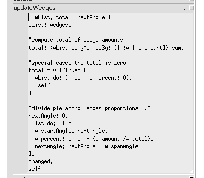

Computing wedge sizes
- Chart sums wedge's amounts
- Computes percentages, updates wedges.

|
Computing wedge sizes
The scheme we will adopt for computing the wedge sizes is that the chart object
will be in control. When asked to updateWedges it will sum the amount in each
individual wedge, then share out the pie based on the ratio of each wedge's
amount to the total.
updateWedges = ( | wList. total. nextAngle. |
wList: wedges.
"compute total of wedge amounts"
total: (wList copyMappedBy: [| :w | w amount ]) sum.
"special case: the total is zero"
total = 0 ifTrue: [
wList do: [| :w | w percent: 0 ].
^self.
].
"divide pie among wedges proportionally"
nextAngle: 0.
wList do: [| :w |
w startAngle: nextAngle.
w percent: 100.0 * (w amount /= total).
nextAngle: nextAngle + w spanAngle.
].
changed. "redraw me"
self
).
Sending the message changed causes the user interface to request the object to re-
draw itself in all the windows in which it is visible.
|